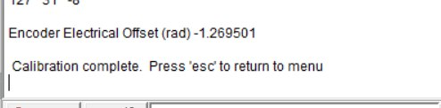
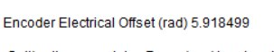

One side of the HT8108 motor was unable to provide the correct torque compared to the functioning side (left side).
It was observed that the electrical offset of the motor drifted significantly within a single day. As a result, one side of the motor could not respond consistently to the LQR control commands.
Electrical offset is the angular mismatch between encoder zero and the motor electrical zero used by the FOC controller. If this offset is wrong or drifting, the phase current is injected at the wrong electrical angle, so commanded torque is no longer produced accurately. This issue is critical because the balancing controller assumes predictable torque response: once torque output becomes inconsistent, state correction quality degrades, closed-loop stability margin drops, and the robot can no longer maintain reliable balancing behavior under disturbance.

Figure 8.2: Calibration reading A, encoder electrical offset \(=-1.269501\ \mathrm{rad}\).

Figure 8.3: Calibration reading B, encoder electrical offset \(=5.918499\ \mathrm{rad}\).
The two calibration captures show a clear electrical-offset inconsistency between runs. This means the electrical-angle alignment used by the controller is not stable, so phase energization is no longer applied at the intended angle. The practical outcome is reduced and inconsistent torque generation, which directly affected closed-loop balancing performance on the affected motor side.
Video 8.1: LQR hardware test showing asymmetric left-right torque response.
Testing was conducted from simulation-first validation to hardware-in-the-loop checks and then to controlled bench tests. The primary objective was to verify mapping correctness and closed-loop behavior before final tuning.
The test workflow included: (1) model/FK consistency checks, (2) Jacobian sign and direction validation, (3) LQR state response verification under injected disturbance, (4) VMC torque-path checking under command limits, and (5) integrated firmware execution with safety cut-off enforcement.
In this balancing test, the expected behavior is as follows: when the chassis tilts forward, the leg-wheel system should also move forward so that the wheel contact point shifts under the chassis center of gravity; when the chassis tilts backward, the correction should occur in the opposite direction. In simple terms, the wheel and the pendulum-equivalent leg dynamics must coordinate to "catch" the body before tilt grows.
The left side shows this corrective trend and follows the LQR command direction during tilt recovery. The right side, however, shows little to no effective movement, indicating that commanded torque is not being converted into sufficient physical correction. Even after increasing the output command level, right-side response remained weak. This indicates that the main limitation in this test stage is hardware-side torque delivery consistency, not the high-level LQR correction logic itself.
A separate mechanical-integrity and speed test was conducted under PID-assisted balancing control to evaluate structural stability during continuous motion. The objective was to verify that the wheel-leg assembly, chain transmission, and chassis interfaces remain stable under repeated acceleration and deceleration cycles.
During this stage, PID-based balancing support was used as a practical test controller to maintain basic posture while mechanical behavior was observed. Key checks include vibration level, chain tracking stability, wheel concentricity, drivetrain noise, and response consistency across low-to-moderate speed commands.
The test is used as an engineering screening step before full high-performance balancing deployment, ensuring that mechanical reliability and speed-path behavior are acceptable before final control tuning.
Video 8.2: Main mechanical integrity and speed test under PID-assisted balancing.
Video 8.2 is used to document the integrated chassis run for structural and speed-performance validation under PID-assisted balancing. The expected verification points include stable wheel tracking, controlled vibration, consistent drivetrain response, and absence of abnormal chain or mounting behavior during repeated motion cycles.